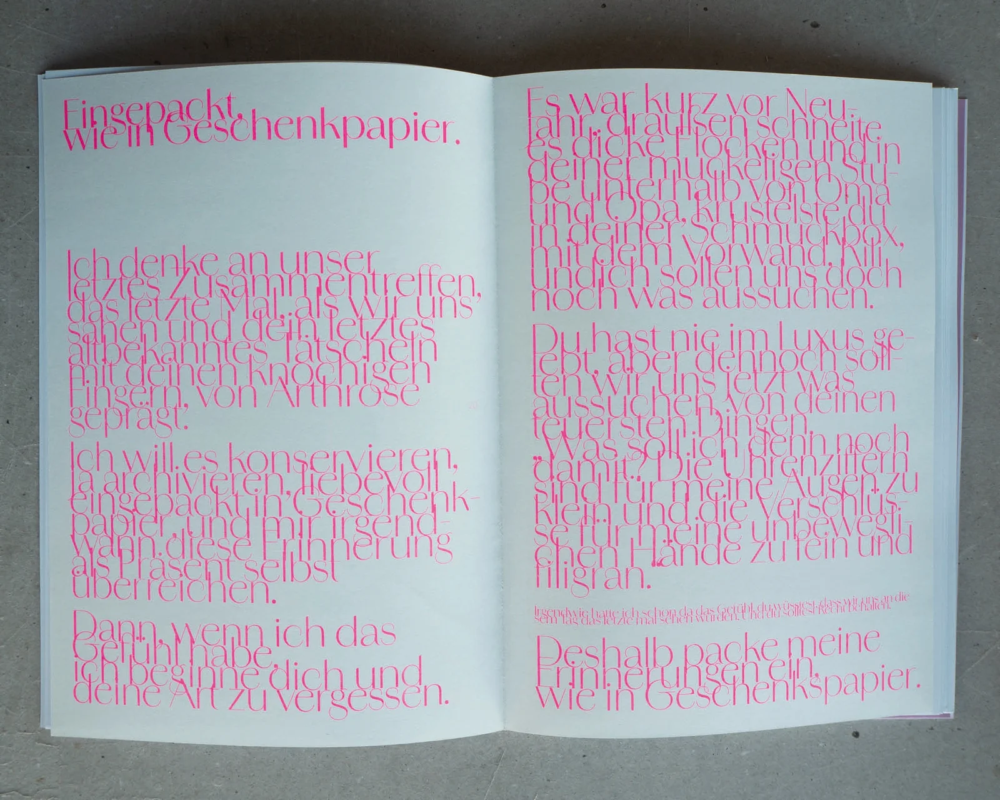
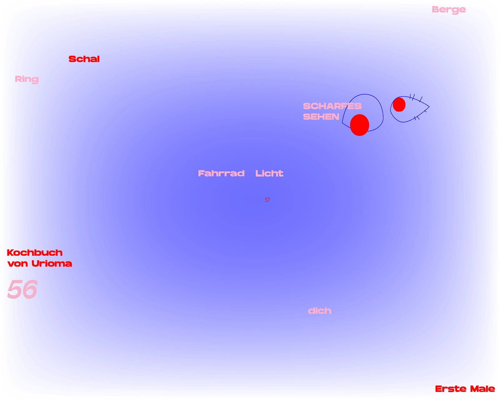
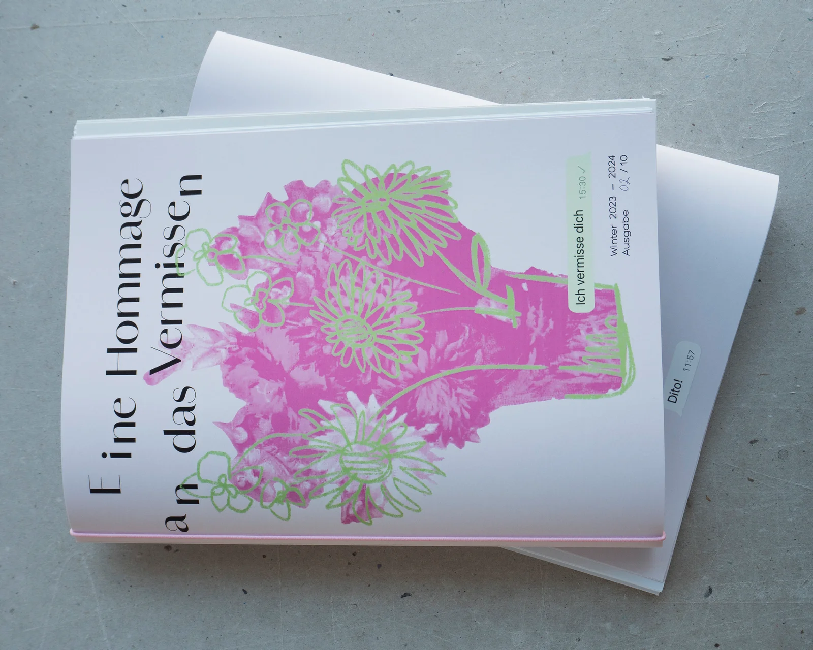

Ein Magazin, welches das Gefühl des Vermissens archiviert. Ich möchte die mit diesem Empfinden einhergehende Ferne und Distanz einfangen, aber auch die unglaubliche Tiefe und Besonderheit dieses Gefühls festhalten, denn wir alle vermissen. Freunde, Familie, den alten Ring, das Kochbuch, besondere Momente oder Gefühle. Dieses Magazin ist eine Hommage an das Vermissen, die uns daran erinnert, wie kostbar die Menschen, Dinge und Augenblicke in unserem Leben sind.


1_ Kein anderer Gruß von deiner hl. Mutter
2_ Eingepackt, wie in Geschenkspapier
3_ Calamari-Ringe, paniert und frittiert
4_ Hallo –
5_ Ich übers Vermissen
6_ Milchglasmomente
7_ Ring, Schal, Dich
8_ Und was vermisst du so?
9_ Vermissen auf Distanz
10_ Wie stelle ich Verluste dar?
11_ Ein Versteckspiel hinter Emoticons
12_ Vermissen
13_ Wildblumenwiese
